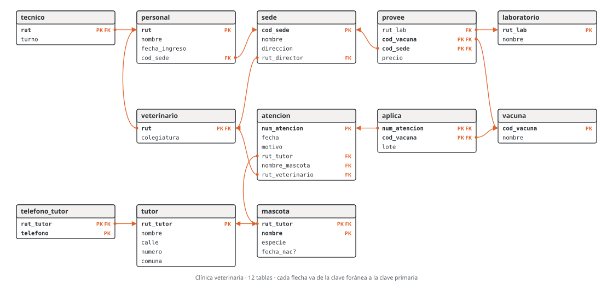
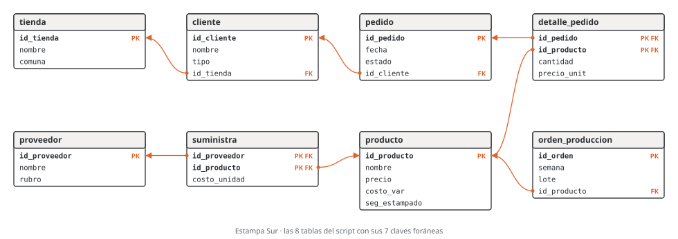

![Camilo Merino]()
Unidad 4 · Del modelo entidad-relación al modelo relacional
Qué vas a poder hacer. Pasar un diagrama entidad-relación a tablas aplicando ocho reglas, decidir en
qué tabla va cada clave foránea y si admite nulo, elegir cómo guardar una jerarquía sabiendo lo que
cuesta cada opción, dibujar el esquema relacional resultante y escribirlo como CREATE TABLE; y hacer
el camino de vuelta: leer un esquema ajeno y reconstruir el diagrama.
Lo que necesitas antes. La unidad 3: leer y escribir pares (mín, máx), participación total y
parcial, entidades débiles, relaciones con atributos, ternarias y jerarquías. Del SQL basta reconocer un
CREATE TABLE; las consultas del ejemplo se leen como receta (la unidad 10 explica JOIN).
Tiempo. Unas 6 horas: 2 de lectura con el script abierto y 4 de práctica.
1. La idea: dónde vive cada hecho
El diagrama sirve para conversar con el dueño del negocio; las tablas, para guardar. El modelo relacional guarda todo en relaciones (tablas): cada fila es un hecho (una tupla), cada columna un atributo con su dominio (el tipo de dato), y la clave primaria distingue una fila de otra. Las tablas se conectan por claves foráneas: una columna que guarda el valor de la clave primaria de otra tabla.
Pasar del diagrama a tablas es decidir, para cada hecho del diagrama, en qué tabla y en qué columnas vive. Las reglas de esta unidad hacen esa decisión de forma mecánica, con dos metas: no perder nada de lo que el diagrama dice y no guardar dos veces lo mismo. Si una regla te obliga a repetir un dato o a dejar una celda con varios valores, la aplicaste mal.
2. Cómo se escribe y se dibuja el esquema
En texto. Una línea por tabla:
mascota(rut_tutor PK FK→tutor, nombre PK, especie, fecha_nac?)
PKmarca las columnas de la clave primaria; si son varias, la clave es el conjunto.FK→tmarca una clave foránea hacia la tablat. Si dos columnas apuntan juntas a la misma tabla (una clave primaria de dos columnas), las dos llevanFK→ty son una sola clave foránea.?marca una columna que admite nulo. Sin?, la columna esNOT NULL.UNIQUEmarca una columna que no se repite sin ser la clave primaria.
En dibujo. Una caja por tabla con sus columnas; PK y FK a la derecha; una flecha desde cada
clave foránea hasta la clave primaria a la que apunta (las figuras de esta unidad). Es el diagrama que
dibujan MySQL Workbench y casi todas las herramientas.
El orden de las columnas no importa. Una relación es un conjunto de atributos: pedido(id_pedido,
id_cliente, fecha, estado) y pedido(id_pedido, fecha, estado, id_cliente) son el mismo esquema. El
orden de las tablas sí importa al crearlas en MySQL: una tabla se crea después de las tablas a las
que apunta.
3. Las ocho reglas
R1 · Entidad fuerte
Cada entidad fuerte es una tabla. Cada atributo simple es una columna y la clave de la entidad es la clave primaria.
- Compuesto: se guarda en sus partes.
dirección (calle, número, comuna)son tres columnas; así se puede preguntar por comuna sin cortar texto. - Derivado: no se guarda; se calcula al consultar. La edad sale de la fecha de nacimiento y la fecha de hoy; guardarla obliga a actualizarla cada día.
R2 · Entidad débil
Tabla propia cuya clave primaria es la clave del dueño más la clave parcial. La clave del dueño es,
a la vez, clave foránea hacia él: mascota(rut_tutor PK FK→tutor, nombre PK, …). La relación
identificadora no produce nada más: ya está dentro de la clave.
Por qué funciona. La clave compuesta deja que la «Luna» de un tutor y la de otro convivan, e impide dos «Luna» del mismo tutor. Si la débil es dueña de otra débil, la clave crece: la de la nieta lleva la del abuelo.
R3 · Relación 1:N
La clave foránea va en la tabla del lado N, la entidad que tiene la N escrita al lado. En
CLIENTE (1,1) — HACE — (0,N) PEDIDO la N está junto a PEDIDO: pedido lleva id_cliente FK→cliente.
- NOT NULL o nulo: lo decide el mínimo escrito junto a la otra entidad. El 1 junto a CLIENTE dice
que todo pedido tiene cliente:
id_clienteesNOT NULL. Con un 0 seríaid_cliente?. - Los atributos de la relación van a la misma tabla del lado N.
Por qué del lado N. Cada pedido tiene un solo cliente: cabe en una columna. Un cliente tiene muchos pedidos: del lado 1 haría falta una columna por pedido o una lista en una celda, que es justo lo que una tabla no debe tener.
R4 · Relación 1:1
La clave foránea va en cualquiera de los dos lados, con UNIQUE (eso es lo que la hace 1:1 y no
1:N). Conviene ponerla del lado con participación total: ahí siempre tiene valor y puede ser NOT
NULL. Del otro lado quedaría llena de nulos (ejercicio 4.6).
Si las dos participaciones son totales y ninguna de las dos entidades tiene otras relaciones, se pueden juntar en una sola tabla.
R5 · Relación N:M
Tabla nueva, la tabla intermedia, con una clave foránea a cada entidad. Su clave primaria es la
unión de las dos claves foráneas, y sus otras columnas son los atributos de la relación:
detalle_pedido(id_pedido PK FK→pedido, id_producto PK FK→producto, cantidad, precio_unit).
Cuándo NO basta. La clave de dos columnas dice «un par, una vez». Si el mismo par puede repetirse (un socio pide el mismo libro en marzo y en mayo), hay que agregar a la clave lo que distingue las repeticiones (la fecha) o, mejor, tratar el hecho como entidad con clave propia (unidad 3, sección 5).
R6 · Atributo multivaluado
Tabla nueva con la clave del dueño (clave foránea) y el valor; la clave primaria es las dos:
telefono_tutor(rut_tutor PK FK→tutor, telefono PK). Un tutor con tres teléfonos tiene tres filas.
Ni telefono1, telefono2, telefono3 (¿y el cuarto? ¿cómo se busca un número?) ni '555 0101, 555
0102' en una celda.
R7 · Relación ternaria
Tabla nueva con una clave foránea a cada una de las tres entidades y los atributos de la relación. La clave primaria la deciden los máximos: entran las claves de las entidades con N junto a ellas; una entidad con 1 junto a ella queda fuera, porque las otras dos ya la determinan.
En LABORATORIO (0,1) — PROVEE — VACUNA (0,N), SEDE (0,N), para cada vacuna y sede hay a lo más un
laboratorio: la clave es (cod_vacuna, cod_sede) y rut_lab es una columna más.
R8 · Jerarquía: tres estrategias
| (A) Una tabla por tipo | (B) Solo los subtipos | (C) Una sola tabla | |
|---|---|---|---|
| Tablas | supertipo y una por subtipo; la del subtipo tiene la clave del supertipo como PK y FK | una por subtipo, cada una con los atributos del supertipo copiados | una, con un discriminador (tipo) y las columnas de todos los subtipos |
| Leer un subtipo completo | une dos tablas | una tabla | una tabla |
| Nulos | ninguno | ninguno | los atributos de los subtipos que no aplican |
| Un subtipo con relación propia (solo un veterinario dirige) | la clave foránea apunta a la tabla del subtipo: la base lo garantiza | apunta a la tabla del subtipo | apunta a la tabla única: no se puede garantizar el tipo sin una regla aparte |
| Cuándo no sirve | casi nunca; es la opción segura | si la jerarquía es parcial (los que no son de ningún subtipo no tienen dónde ir) o solapada (el que es de dos se guarda dos veces) | con muchos subtipos con muchos atributos propios: la tabla se llena de nulos |
Regla práctica: (C) si los subtipos casi no tienen nada propio (el tipo de los clientes de Estampa
Sur); (A) si tienen atributos o relaciones propias; (B) solo si la jerarquía es total y disjunta, y
nadie apunta al supertipo.
Resumen
| Regla | En el diagrama | En el esquema |
|---|---|---|
| R1 | entidad fuerte | tabla; compuesto en sus partes; derivado no se guarda |
| R2 | entidad débil | tabla con PK = clave del dueño (FK) + clave parcial |
| R3 | relación 1:N | FK en la tabla del lado N; NOT NULL si el mínimo del otro lado es 1 |
| R4 | relación 1:1 | FK con UNIQUE en el lado de participación total |
| R5 | relación N:M | tabla intermedia; PK = las dos FK; columnas = atributos de la relación |
| R6 | atributo multivaluado | tabla con la clave del dueño y el valor; PK = las dos |
| R7 | relación ternaria | tabla con tres FK; PK = las FK de los lados con N |
| R8 | jerarquía | (A) una tabla por tipo · (B) solo subtipos · (C) una tabla con discriminador |
4. Lo que las reglas no alcanzan a garantizar
Las claves hacen cumplir los máximos 1 (una columna) y los mínimos 1 de los lados con clave foránea
(NOT NULL). Quedan fuera:
- El mínimo 1 del lado que no tiene la clave foránea: que todo cliente tenga al menos un pedido, que todo pedido tenga al menos una línea de detalle. La base acepta un pedido vacío (sección 10).
- Los máximos con número: «un feriante arrienda como máximo dos puestos».
- Las reglas entre relaciones: «el jefe de un sector trabaja en ese sector».
Esas reglas se escriben al lado del esquema y las vigila la aplicación, una transacción (unidad 12) o
un disparador. La unidad 5 agrega CHECK y UNIQUE para las reglas que caben en una fila.
Ciclos de claves foráneas. A veces dos reglas apuntan en sentidos opuestos: el personal trabaja en
una sede (personal.cod_sede) y la sede la dirige alguien del personal (sede.rut_director). Con las
dos NOT NULL, no hay fila que se pueda insertar primero. Tres salidas: postergar la revisión de una de
las dos hasta el final de la transacción (DEFERRABLE INITIALLY DEFERRED, del estándar SQL, que SQLite
acepta y MySQL no); dejar una de las dos con nulo permitido y completarla después; o crear la tabla sin
esa clave foránea y agregarla con ALTER TABLE cuando los datos ya están.
5. SQLite y MySQL
Todo el SQL de esta unidad corre en SQLite (viene con Python) y en MySQL, con estas diferencias:
- SQLite revisa las claves foráneas solo después de
PRAGMA foreign_keys = ON;. MySQL (InnoDB) las revisa siempre. - En MySQL 8.0 y anteriores, un
REFERENCESescrito junto a la columna (id_cliente INTEGER REFERENCES cliente(id_cliente)) se acepta sin crear la clave foránea. La forma que sirve en los dos es la cláusula aparteFOREIGN KEY (id_cliente) REFERENCES cliente(id_cliente), la que usan los scripts de esta unidad. El script del caso usa la forma junto a la columna; para llevarlo a MySQL 8.0 hay que pasarla a cláusula aparte. - MySQL no tiene
DEFERRABLE: ver la sección 4. - SQLite no hace cumplir el largo de
VARCHAR(n); MySQL sí.
6. Ejemplo resuelto · La clínica veterinaria pasa a tablas
El diagrama es el del ejemplo de la unidad 3: la clínica Patitas del Sur de Puerto Montt, con sedes, personal (veterinarios y técnicos), tutores, mascotas, atenciones, vacunas y laboratorios.
Paso 1 · Regla por regla.
| Tabla | Sale de | Regla |
|---|---|---|
| sede, personal, tutor, atencion, vacuna, laboratorio | las seis entidades fuertes; la dirección del tutor en tres columnas | R1 |
| veterinario, tecnico | la jerarquía disjunta y parcial, con la estrategia (A) | R8 |
| mascota | entidad débil de TUTOR, clave parcial nombre | R2 |
| telefono_tutor | el teléfono multivaluado | R6 |
| aplica | la relación N:M APLICA con su atributo lote | R5 |
| provee | la ternaria PROVEE con su atributo precio | R7 |
| Clave foránea | Sale de | Regla |
|---|---|---|
| personal.cod_sede → sede | TRABAJA_EN 1:N; NOT NULL por el 1 junto a SEDE |
R3 |
sede.rut_director → veterinario, UNIQUE |
DIRIGE 1:1; va en sede porque su participación es total | R4 |
| atencion.(rut_tutor, nombre_mascota) → mascota | RECIBE 1:N; dos columnas porque la clave de mascota tiene dos | R3 |
| atencion.rut_veterinario → veterinario | REALIZA 1:N; apunta al subtipo, no a personal | R3 |
| veterinario.rut, tecnico.rut → personal | el subtipo es el mismo ejemplar que el supertipo | R8 |
| mascota.rut_tutor → tutor | la relación identificadora PERTENECE | R2 |
| telefono_tutor.rut_tutor → tutor | el dueño del valor | R6 |
| aplica → atencion, aplica → vacuna | las dos patas de APLICA | R5 |
| provee → laboratorio, vacuna, sede | las tres patas de PROVEE | R7 |
Paso 2 · El esquema. Son 12 tablas, 40 columnas y 13 claves foráneas:
sede(cod_sede PK, nombre, direccion, rut_director FK→veterinario UNIQUE)
personal(rut PK, nombre, fecha_ingreso, cod_sede FK→sede)
veterinario(rut PK FK→personal, colegiatura)
tecnico(rut PK FK→personal, turno)
tutor(rut_tutor PK, nombre, calle, numero, comuna)
telefono_tutor(rut_tutor PK FK→tutor, telefono PK)
mascota(rut_tutor PK FK→tutor, nombre PK, especie, fecha_nac?)
atencion(num_atencion PK, fecha, motivo, rut_tutor FK→mascota, nombre_mascota FK→mascota, rut_veterinario FK→veterinario)
vacuna(cod_vacuna PK, nombre)
aplica(num_atencion PK FK→atencion, cod_vacuna PK FK→vacuna, lote)
laboratorio(rut_lab PK, nombre)
provee(rut_lab FK→laboratorio, cod_vacuna PK FK→vacuna, cod_sede PK FK→sede, precio)

Paso 3 · En SQL. El script sql/u04_mer_a_relacional.sql crea las tablas. Fíjate en tres cosas: la
clave foránea de dos columnas de atencion, la clave de dos columnas de provee (sin rut_lab) y el
DEFERRABLE de sede, que rompe el ciclo sede → veterinario → personal → sede (sección 4).
CREATE TABLE sede (
cod_sede VARCHAR(3) NOT NULL,
nombre VARCHAR(30) NOT NULL,
direccion VARCHAR(60) NOT NULL,
rut_director VARCHAR(12) NOT NULL UNIQUE,
PRIMARY KEY (cod_sede),
FOREIGN KEY (rut_director) REFERENCES veterinario(rut) DEFERRABLE INITIALLY DEFERRED
);
CREATE TABLE personal (
rut VARCHAR(12) NOT NULL,
nombre VARCHAR(60) NOT NULL,
fecha_ingreso DATE NOT NULL,
cod_sede VARCHAR(3) NOT NULL,
PRIMARY KEY (rut),
FOREIGN KEY (cod_sede) REFERENCES sede(cod_sede)
);
CREATE TABLE veterinario (
rut VARCHAR(12) NOT NULL,
colegiatura VARCHAR(10) NOT NULL,
PRIMARY KEY (rut),
FOREIGN KEY (rut) REFERENCES personal(rut)
);
CREATE TABLE tecnico (
rut VARCHAR(12) NOT NULL,
turno VARCHAR(6) NOT NULL,
PRIMARY KEY (rut),
FOREIGN KEY (rut) REFERENCES personal(rut)
);
CREATE TABLE tutor (
rut_tutor VARCHAR(12) NOT NULL,
nombre VARCHAR(60) NOT NULL,
calle VARCHAR(40) NOT NULL,
numero INTEGER NOT NULL,
comuna VARCHAR(30) NOT NULL,
PRIMARY KEY (rut_tutor)
);
CREATE TABLE telefono_tutor (
rut_tutor VARCHAR(12) NOT NULL,
telefono VARCHAR(16) NOT NULL,
PRIMARY KEY (rut_tutor, telefono),
FOREIGN KEY (rut_tutor) REFERENCES tutor(rut_tutor)
);
CREATE TABLE mascota (
rut_tutor VARCHAR(12) NOT NULL,
nombre VARCHAR(30) NOT NULL,
especie VARCHAR(20) NOT NULL,
fecha_nac DATE,
PRIMARY KEY (rut_tutor, nombre),
FOREIGN KEY (rut_tutor) REFERENCES tutor(rut_tutor)
);
CREATE TABLE atencion (
num_atencion INTEGER NOT NULL,
fecha DATE NOT NULL,
motivo VARCHAR(80) NOT NULL,
rut_tutor VARCHAR(12) NOT NULL,
nombre_mascota VARCHAR(30) NOT NULL,
rut_veterinario VARCHAR(12) NOT NULL,
PRIMARY KEY (num_atencion),
FOREIGN KEY (rut_tutor, nombre_mascota) REFERENCES mascota(rut_tutor, nombre),
FOREIGN KEY (rut_veterinario) REFERENCES veterinario(rut)
);
CREATE TABLE vacuna (
cod_vacuna VARCHAR(3) NOT NULL,
nombre VARCHAR(40) NOT NULL,
PRIMARY KEY (cod_vacuna)
);
CREATE TABLE aplica (
num_atencion INTEGER NOT NULL,
cod_vacuna VARCHAR(3) NOT NULL,
lote VARCHAR(12) NOT NULL,
PRIMARY KEY (num_atencion, cod_vacuna),
FOREIGN KEY (num_atencion) REFERENCES atencion(num_atencion),
FOREIGN KEY (cod_vacuna) REFERENCES vacuna(cod_vacuna)
);
CREATE TABLE laboratorio (
rut_lab VARCHAR(12) NOT NULL,
nombre VARCHAR(40) NOT NULL,
PRIMARY KEY (rut_lab)
);
CREATE TABLE provee (
rut_lab VARCHAR(12) NOT NULL,
cod_vacuna VARCHAR(3) NOT NULL,
cod_sede VARCHAR(3) NOT NULL,
precio INTEGER NOT NULL,
PRIMARY KEY (cod_vacuna, cod_sede),
FOREIGN KEY (rut_lab) REFERENCES laboratorio(rut_lab),
FOREIGN KEY (cod_vacuna) REFERENCES vacuna(cod_vacuna),
FOREIGN KEY (cod_sede) REFERENCES sede(cod_sede)
);
El verificador lee este esquema con PRAGMA y lo compara con el que sale de aplicar las reglas al
diagrama: coinciden columna por columna (tipo y NOT NULL), en claves primarias, claves foráneas y
UNIQUE.
Paso 4 · Cargar y mirar. El script carga dos sedes, seis personas, cuatro tutores, seis mascotas,
siete atenciones, tres vacunas y dos laboratorios (los INSERT están en el archivo, entre BEGIN y
COMMIT). Cada consulta de abajo muestra una regla funcionando.
La débil: dos mascotas se llaman Luna y conviven, porque son de tutores distintos.
SELECT t.nombre AS tutor, m.nombre AS mascota, m.especie
FROM mascota m
JOIN tutor t ON t.rut_tutor = m.rut_tutor
ORDER BY t.nombre, m.nombre;
| tutor | mascota | especie |
|---|---|---|
| Héctor Uribe | Pelusa | conejo |
| Héctor Uribe | Toby | perro |
| Ignacio Paredes | Luna | perro |
| Ignacio Paredes | Michi | gato |
| Marcela Toledo | Rocky | perro |
| Rocío Gallardo | Luna | gato |
El multivaluado: un teléfono por fila.
SELECT t.nombre AS tutor, f.telefono
FROM telefono_tutor f
JOIN tutor t ON t.rut_tutor = f.rut_tutor
ORDER BY t.nombre, f.telefono;
| tutor | telefono |
|---|---|
| Héctor Uribe | +56 65 555 0302 |
| Héctor Uribe | +56 9 5550 0301 |
| Ignacio Paredes | +56 9 5550 0101 |
| Ignacio Paredes | +56 9 5550 0102 |
| Marcela Toledo | +56 9 5550 0401 |
| Rocío Gallardo | +56 9 5550 0201 |
La 1:1 y la jerarquía: el director se busca en veterinario (su colegiatura) y en personal (su
nombre).
SELECT s.nombre AS sede, p.nombre AS director, v.colegiatura
FROM sede s
JOIN veterinario v ON v.rut = s.rut_director
JOIN personal p ON p.rut = v.rut
ORDER BY s.nombre;
| sede | director | colegiatura |
|---|---|---|
| Alerce | Matías Barría | MV-3017 |
| Centro | Daniela Ojeda | MV-2231 |
La N:M: dos atenciones aplicaron dos vacunas cada una, con su lote.
SELECT a.num_atencion, a.fecha, a.nombre_mascota, v.nombre AS vacuna, ap.lote
FROM aplica ap
JOIN atencion a ON a.num_atencion = ap.num_atencion
JOIN vacuna v ON v.cod_vacuna = ap.cod_vacuna
ORDER BY a.num_atencion, v.nombre;
| num_atencion | fecha | nombre_mascota | vacuna | lote |
|---|---|---|---|---|
| 1 | 2026-03-02 | Luna | antirrábica | L-2611 |
| 1 | 2026-03-02 | Luna | óctuple canina | L-2648 |
| 3 | 2026-03-09 | Luna | triple felina | L-3105 |
| 6 | 2026-04-20 | Rocky | antirrábica | L-2611 |
| 6 | 2026-04-20 | Rocky | óctuple canina | L-2702 |
La ternaria: cada sede compra la antirrábica a su laboratorio, a su precio ($8.900 en Centro y $9.300 en Alerce).
SELECT s.nombre AS sede, l.nombre AS laboratorio, p.precio
FROM provee p
JOIN sede s ON s.cod_sede = p.cod_sede
JOIN laboratorio l ON l.rut_lab = p.rut_lab
WHERE p.cod_vacuna = 'ANR'
ORDER BY s.nombre;
| sede | laboratorio | precio |
|---|---|---|
| Alerce | BioSur | 9300 |
| Centro | Andes Vet | 8900 |
Paso 5 · Lo que la base rechaza. Cuatro intentos que el diagrama prohíbe y el esquema impide (con
PRAGMA foreign_keys = ON):
INSERT INTO mascota VALUES ('99.999.999-9', 'Kira', 'perro', NULL);
Respuesta: FOREIGN KEY constraint failed. No hay tutor con ese rut (R2).
INSERT INTO mascota VALUES ('15.630.218-K', 'Luna', 'gato', NULL);
Respuesta: UNIQUE constraint failed: mascota.rut_tutor, mascota.nombre. Ignacio Paredes ya tiene una
Luna (la clave de la débil).
UPDATE sede SET rut_director = '13.482.906-0' WHERE cod_sede = 'ALE';
Respuesta: UNIQUE constraint failed: sede.rut_director. Daniela Ojeda ya dirige Centro (el UNIQUE de
la 1:1).
UPDATE sede SET rut_director = '12.774.351-7' WHERE cod_sede = 'ALE';
Respuesta: FOREIGN KEY constraint failed. Jorge Cárcamo es técnico: no está en veterinario. Con la
clave foránea postergada, el error sale al confirmar la transacción.
Paso 6 · La otra estrategia para la jerarquía. Con la estrategia (C), el personal queda en una sola tabla:
personal(rut PK, nombre, fecha_ingreso, tipo?, colegiatura?, turno?, cod_sede FK→sede)
CREATE TABLE personal_una_tabla (
rut VARCHAR(12) NOT NULL,
nombre VARCHAR(60) NOT NULL,
fecha_ingreso DATE NOT NULL,
tipo VARCHAR(12),
colegiatura VARCHAR(10),
turno VARCHAR(6),
cod_sede VARCHAR(3) NOT NULL,
PRIMARY KEY (rut),
FOREIGN KEY (cod_sede) REFERENCES sede(cod_sede)
);
Con las mismas seis personas, los nulos:
SELECT COUNT(*) - COUNT(tipo) AS sin_tipo,
COUNT(*) - COUNT(colegiatura) AS sin_colegiatura,
COUNT(*) - COUNT(turno) AS sin_turno
FROM personal_una_tabla;
| sin_tipo | sin_colegiatura | sin_turno |
|---|---|---|
| 1 | 3 | 4 |
Ocho celdas vacías de 18 en las tres columnas de la jerarquía. Y lo más caro: sede.rut_director y
atencion.rut_veterinario tendrían que apuntar a personal_una_tabla, y la base aceptaría a un técnico
como director. La estrategia (B) ni siquiera se puede usar: la jerarquía es parcial (la recepcionista no
tendría tabla) y TRABAJA_EN apunta al supertipo, que con (B) no existe.
Cómo se lee.
- La clínica eligió (A) porque VETERINARIO tiene dos relaciones propias: con (A) la base garantiza que director y quien atiende sean veterinarios, sin escribir ninguna regla aparte. El costo es una unión más al leer un veterinario completo.
- La clave de
proveees una decisión del negocio. Si mañana una sede compra la misma vacuna a dos laboratorios, el par junto a LABORATORIO pasa de (0,1) a (0,N) yrut_labentra a la clave primaria. Un cambio de una cifra en el diagrama cambia la clave de la tabla. - El ciclo es real, no un error. Toda sede tiene director y todo director trabaja en una sede. La
base lo sostiene revisando
rut_directoral final de la transacción; en MySQL se carga y después se agrega la clave foránea.
7. Errores típicos
| Error | Cómo evitarlo |
|---|---|
Clave foránea en el lado 1 (sector(…, rut_paciente)): un sector con muchos pacientes no cabe |
la FK va donde está la N; pregunta «¿cuántos tiene?»: si es uno, cabe en una columna |
| Relación N:M sin tabla intermedia (una columna «productos» con una lista) | toda N:M es una tabla con las dos claves foráneas |
Tabla intermedia sin clave primaria, y después un id agregado como parche (pasó en un test del curso) |
la clave de la intermedia es el par de claves foráneas; un id suelto deja repetir el par |
Atributo multivaluado en una columna (idiomas = 'español, inglés') o en columnas numeradas |
tabla aparte, una fila por valor |
Olvidar NOT NULL en una FK con participación total |
el mínimo 1 junto a la entidad referida se escribe NOT NULL |
| Clave foránea de una sola columna hacia una tabla con clave de dos | la FK tiene tantas columnas como la PK a la que apunta |
| Repetir claves foráneas que se deducen de otra (el viaje con id_cliente, id_destino e id_reserva, cuando la reserva ya los tiene) | cada hecho en un lugar: se llega al cliente por la reserva |
REFERENCES junto a la columna en MySQL 8.0 |
usa la cláusula aparte FOREIGN KEY (…) REFERENCES … |
| Estrategia (B) con una jerarquía parcial o solapada | (B) solo si es total y disjunta |
| Guardar un atributo derivado (la edad) | se calcula al consultar |
8. Práctica
Diez ejercicios: 4.1 a 4.4 básicos, 4.5 a 4.8 intermedios, 4.9 y 4.10 de desafío. Las pautas están en la
sección 9; los scripts de 4.5, 4.6, 4.8 y 4.10, en sql/u04_mer_a_relacional.sql. Escribe cada esquema
en la notación de la sección 2.
4.1 · La feria libre a tablas (básico). Pasa a tablas el diagrama del ejercicio 3.1: FERIANTE (rut_feriante, nombre, teléfono), PUESTO (id_puesto, pasillo, metros), PATENTE (num_patente, vence) y PRODUCTO (id_producto, nombre), con
FERIANTE (0,1) — ARRIENDA — (1,2) PUESTOFERIANTE (1,1) — TIENE — (0,1) PATENTEPUESTO (1,N) — VENDE — (0,N) PRODUCTO
¿Qué columna admite nulo y por qué? ¿Qué parte del diagrama no queda garantizada?
4.2 · Socios de un club de montaña de Coyhaique (básico). SOCIO tiene rut (clave), nombre,
dirección (calle, número, comuna), uno o más correos, fecha de nacimiento y edad. Escribe el esquema.
¿Por qué no correo1, correo2?
4.3 · La liga de futbolito a tablas (básico). Del ejercicio 3.4: EQUIPO (id_equipo, nombre), JUGADOR (id_jugador, nombre, fecha_nac) y PARTIDO (id_partido, fecha, cancha), con
EQUIPO (1,1) — JUEGA_EN — (1,N) JUGADOR, con el atributo número de camiseta;EQUIPO (1,1) — LOCAL — (0,N) PARTIDOyEQUIPO (1,1) — VISITA — (0,N) PARTIDO;JUGADOR (0,N) — PARTICIPA — (0,N) PARTIDO, con goles y minutos.
Escribe el esquema. ¿Dónde quedó el número de camiseta y por qué?
4.4 · Dos errores en el Cesfam (básico). Para el diagrama del ejercicio 3.2, un compañero propuso:
sector(id_sector PK, nombre, rut_paciente FK→paciente)
paciente(rut_paciente PK, nombre)
medico(rut_medico PK, nombre, id_sector FK→sector, jefe? )
donde jefe vale «sí» o «no». Encuentra los errores y escribe el esquema correcto. ¿Qué problema aparece
al cargar los datos?
4.5 · Cuotas de una cooperativa (intermedio, SQL). CRÉDITO (num_credito, monto, plazo) tiene CUOTAS,
numeradas del 1 al plazo dentro de cada crédito, con fecha de vencimiento y monto. (a) Escribe el esquema
y el CREATE TABLE. (b) Carga el crédito 501 (plazo 24, cuotas de $61.250, tres cargadas) y el 502 (plazo
24, cuotas de $48.900, dos cargadas). (c) Intenta cargar de nuevo la cuota 2 del crédito 501, y una
cuota del crédito 503, que no existe. ¿Qué responde la base? (d) Cuenta las cuotas y suma los montos por
crédito.
4.6 · ¿En qué lado va la clave de la 1:1? (intermedio, SQL). El Cesfam tiene 4 sectores y 11 médicos; cada sector tiene un jefe. Compara dos versiones de JEFE:
CREATE TABLE sector_a (
id_sector INTEGER NOT NULL,
nombre VARCHAR(30) NOT NULL,
rut_jefe VARCHAR(12) NOT NULL UNIQUE,
PRIMARY KEY (id_sector)
);
CREATE TABLE medico_b (
rut_medico VARCHAR(12) NOT NULL,
nombre VARCHAR(60) NOT NULL,
jefe_de INTEGER UNIQUE,
PRIMARY KEY (rut_medico)
);
Cuenta las filas y los nulos de la columna de la relación en cada versión y di cuál conviene.
4.7 · Tres estrategias en el centro deportivo (intermedio). La jerarquía del ejercicio 3.6 (PERSONA
con SOCIO y MONITOR, solapada y parcial) tiene hoy 54 personas: 43 socios y 8 monitores, de los cuales 3
son ambas cosas. SOCIO tiene dos atributos propios (fecha_alta, plan) y MONITOR otros dos
(certificacion, valor_hora). Para cada estrategia di cuántas tablas y filas tiene y cuántas celdas
nulas deja en los atributos propios. En (C), ¿alcanza una columna tipo? ¿Qué pasa con (B)?
4.8 · La clave de la ternaria (intermedio, SQL). Con los datos del ejercicio 3.7 (cinco tríos agricultor, feria, producto con su precio por kilo): (a) escribe el esquema con las entidades AGRICULTOR, FERIA y PRODUCTO (cada una con id y nombre) y la ternaria LLEVA con todos los pares (0,N). (b) La cooperativa agrega una regla: «cada agricultor lleva cada producto a una sola feria». ¿Qué par cambia y qué clave queda? (c) Comprueba en SQL: Rosa quiere llevar papas también a San Carlos, a $720. ¿Qué versión lo acepta?
4.9 · La liga de básquetbol a tablas (desafío). Pasa a tablas el diagrama del ejercicio 3.9 (pauta
de 3.9). Cuenta tablas y claves foráneas. ¿Cuántas columnas tiene la clave foránea de partido hacia el
equipo local, y por qué?
4.10 · De las tablas al diagrama (desafío). La biblioteca comunal de Ancud tiene este esquema y nadie guardó el diagrama. Reconstrúyelo: di qué tabla es entidad fuerte, entidad débil o relación, y de cada clave foránea, el tipo de relación y el par que se puede leer. ¿Qué no se puede saber mirando solo las tablas?
CREATE TABLE socio (
rut_socio VARCHAR(12) NOT NULL,
nombre VARCHAR(60) NOT NULL,
PRIMARY KEY (rut_socio)
);
CREATE TABLE carnet (
num_carnet INTEGER NOT NULL,
vence DATE NOT NULL,
rut_socio VARCHAR(12) NOT NULL UNIQUE,
PRIMARY KEY (num_carnet),
FOREIGN KEY (rut_socio) REFERENCES socio(rut_socio)
);
CREATE TABLE autor (
id_autor INTEGER NOT NULL,
nombre VARCHAR(60) NOT NULL,
PRIMARY KEY (id_autor)
);
CREATE TABLE libro (
isbn VARCHAR(17) NOT NULL,
titulo VARCHAR(80) NOT NULL,
PRIMARY KEY (isbn)
);
CREATE TABLE escribe (
isbn VARCHAR(17) NOT NULL,
id_autor INTEGER NOT NULL,
PRIMARY KEY (isbn, id_autor),
FOREIGN KEY (isbn) REFERENCES libro(isbn),
FOREIGN KEY (id_autor) REFERENCES autor(id_autor)
);
CREATE TABLE ejemplar (
isbn VARCHAR(17) NOT NULL,
num_copia INTEGER NOT NULL,
estado VARCHAR(10) NOT NULL,
PRIMARY KEY (isbn, num_copia),
FOREIGN KEY (isbn) REFERENCES libro(isbn)
);
CREATE TABLE prestamo (
id_prestamo INTEGER NOT NULL,
fecha DATE NOT NULL,
devuelto DATE,
isbn VARCHAR(17) NOT NULL,
num_copia INTEGER NOT NULL,
rut_socio VARCHAR(12) NOT NULL,
PRIMARY KEY (id_prestamo),
FOREIGN KEY (isbn, num_copia) REFERENCES ejemplar(isbn, num_copia),
FOREIGN KEY (rut_socio) REFERENCES socio(rut_socio)
);
9. Pautas
4.1. Son 5 tablas y 4 claves foráneas:
feriante(rut_feriante PK, nombre, telefono)
puesto(id_puesto PK, pasillo, metros, rut_feriante? FK→feriante)
patente(num_patente PK, vence, rut_feriante FK→feriante UNIQUE)
producto(id_producto PK, nombre)
vende(id_puesto PK FK→puesto, id_producto PK FK→producto)
ARRIENDA es 1:N (el 2 es «muchos») y la clave foránea va en puesto. Admite nulo porque junto a
FERIANTE dice (0,1): un puesto puede estar libre. TIENE es 1:1 y va en patente, la de participación
total, con UNIQUE. No queda garantizado: el máximo de dos puestos por feriante, que todo feriante
arriende al menos un puesto y que todo producto se venda en al menos un puesto.
4.2.
socio(rut PK, nombre, calle, numero, comuna, fecha_nac)
correo_socio(rut PK FK→socio, correo PK)
La dirección queda en sus tres partes (R1), los correos en su tabla (R6) y la edad no se guarda: se
calcula con la fecha de nacimiento. Con correo1 y correo2 el tercer correo no cabe, buscar un correo
obliga a mirar dos columnas y los socios con uno solo dejan nulos.
4.3.
equipo(id_equipo PK, nombre)
jugador(id_jugador PK, nombre, fecha_nac, id_equipo FK→equipo, numero_camiseta)
partido(id_partido PK, fecha, cancha, id_local FK→equipo, id_visita FK→equipo)
participa(id_jugador PK FK→jugador, id_partido PK FK→partido, goles, minutos)
El número de camiseta es un atributo de JUEGA_EN, que es 1:N: va con la clave foránea, en jugador
(R3). LOCAL y VISITA dan dos claves foráneas distintas hacia la misma tabla, con nombres distintos.
4.4. Dos errores. (1) rut_paciente en sector pone la clave foránea en el lado 1: un sector con
200 pacientes necesitaría 200 filas repitiendo su nombre. Va en paciente. (2) jefe como sí/no no dice
de qué sector es jefe ni impide dos jefes en un sector. La 1:1 va en sector, la de participación total,
con UNIQUE. Esquema correcto:
sector(id_sector PK, nombre, rut_jefe FK→medico UNIQUE)
paciente(rut_paciente PK, nombre, id_sector FK→sector)
medico(rut_medico PK, nombre, id_sector FK→sector)
Al cargar aparece un ciclo: sector.rut_jefe apunta a medico y medico.id_sector apunta a sector,
las dos NOT NULL. Se resuelve como en la clínica (sección 4).
4.5. (a) La cuota es débil de CRÉDITO (R2):
credito(num_credito PK, monto, plazo)
cuota(num_credito PK FK→credito, numero PK, vence, monto)
CREATE TABLE credito (
num_credito INTEGER NOT NULL,
monto INTEGER NOT NULL,
plazo INTEGER NOT NULL,
PRIMARY KEY (num_credito)
);
CREATE TABLE cuota (
num_credito INTEGER NOT NULL,
numero INTEGER NOT NULL,
vence DATE NOT NULL,
monto INTEGER NOT NULL,
PRIMARY KEY (num_credito, numero),
FOREIGN KEY (num_credito) REFERENCES credito(num_credito)
);
(b) Los INSERT están en el script. (c) Las dos se rechazan:
INSERT INTO cuota VALUES (501, 2, '2026-12-05', 61250);
Respuesta: UNIQUE constraint failed: cuota.num_credito, cuota.numero.
INSERT INTO cuota VALUES (503, 1, '2026-11-30', 52000);
Respuesta: FOREIGN KEY constraint failed. (d)
SELECT num_credito, COUNT(*) AS cuotas, SUM(monto) AS total
FROM cuota
GROUP BY num_credito
ORDER BY num_credito;
| num_credito | cuotas | total |
|---|---|---|
| 501 | 3 | 183750 |
| 502 | 2 | 97800 |
Si los créditos se renegocian y las cuotas se renumeran, conviene darle a la cuota una clave propia: la débil supone que el número no cambia.
4.6.
SELECT COUNT(*) AS filas, COUNT(*) - COUNT(rut_jefe) AS nulos
FROM sector_a;
| filas | nulos |
|---|---|
| 4 | 0 |
SELECT COUNT(*) AS filas, COUNT(*) - COUNT(jefe_de) AS nulos
FROM medico_b;
| filas | nulos |
|---|---|
| 11 | 7 |
Conviene sector_a: el sector participa totalmente (todo sector tiene jefe), su columna nunca está vacía
y puede ser NOT NULL, que obliga a que todo sector tenga jefe. En medico_b siete de once filas quedan
en nulo y la base no puede exigir que cada sector tenga jefe.
4.7. Hay 40 solo socios, 5 solo monitores, 3 ambas cosas y 6 personas que no son ninguna.
| Estrategia | Tablas | Filas | Celdas nulas en atributos propios |
|---|---|---|---|
| (A) una tabla por tipo | 3 | 105 filas (54 + 43 + 8) | 0 |
| (B) solo subtipos | 2 | 51 filas (43 + 8) | 0, pero no sirve |
| (C) una sola tabla | 1 | 54 | 114 celdas nulas |
En (C), los atributos de socio dejan 22 nulos (2 columnas × 11 no socios) y los de monitor 92 nulos (2 ×
46 no monitores). Una sola columna tipo no alcanza porque la jerarquía es solapada: hacen falta dos
banderas, es_socio y es_monitor. (B) no sirve: las 6 personas que no son socio ni monitor no tienen
tabla, y los 3 que son ambas cosas quedan dos veces, con su nombre y teléfono repetidos. Aquí conviene
(A).
4.8. (a) y (b):
agricultor(id_agricultor PK, nombre)
feria(id_feria PK, nombre)
producto(id_producto PK, nombre)
lleva(id_agricultor PK FK→agricultor, id_feria PK FK→feria, id_producto PK FK→producto, precio_kg)
Con la regla nueva, para cada agricultor y producto hay a lo más una feria: el par junto a FERIA pasa a
(0,1) y id_feria sale de la clave:
lleva(id_agricultor PK FK→agricultor, id_feria FK→feria, id_producto PK FK→producto, precio_kg)
(c) En el script, lleva_a tiene la clave de los tres y lleva_b la de dos (las entidades se reducen a
su nombre para mirar solo la clave):
CREATE TABLE lleva_a (
agricultor VARCHAR(20) NOT NULL,
feria VARCHAR(20) NOT NULL,
producto VARCHAR(20) NOT NULL,
precio_kg INTEGER NOT NULL,
PRIMARY KEY (agricultor, feria, producto)
);
CREATE TABLE lleva_b (
agricultor VARCHAR(20) NOT NULL,
feria VARCHAR(20) NOT NULL,
producto VARCHAR(20) NOT NULL,
precio_kg INTEGER NOT NULL,
PRIMARY KEY (agricultor, producto)
);
lleva_a acepta la fila nueva; lleva_b la rechaza:
INSERT INTO lleva_b VALUES ('Rosa', 'San Carlos', 'papas', 720);
Respuesta: UNIQUE constraint failed: lleva_b.agricultor, lleva_b.producto. En lleva_a, Rosa queda
con papas en dos ferias:
SELECT feria, precio_kg
FROM lleva_a
WHERE agricultor = 'Rosa' AND producto = 'papas'
ORDER BY feria;
| feria | precio_kg |
|---|---|
| Chillán | 700 |
| San Carlos | 720 |
La clave es la regla del negocio escrita en la tabla: con la regla nueva, la base la hace cumplir sola.
4.9. Son 7 tablas y 7 claves foráneas:
club(cod_club PK, nombre, comuna)
equipo(cod_club PK FK→club, categoria PK, rut_entrenador FK→entrenador)
entrenador(rut_entrenador PK, nombre)
jugador(rut_jugador PK, nombre, fecha_nac, cod_club FK→equipo, categoria FK→equipo, numero_camiseta)
partido(num_partido PK, fecha, cancha, club_local FK→equipo, categoria_local FK→equipo, club_visita FK→equipo, categoria_visita FK→equipo)
arbitro(rut_arbitro PK, nombre)
arbitra(rut_arbitro PK FK→arbitro, num_partido PK FK→partido, rol)
EQUIPO es débil (R2), así que toda clave foránea hacia él tiene dos columnas: la del equipo local es (club_local, categoria_local). Quedan fuera del esquema: los mínimos (5 jugadores por equipo, 2 árbitros por partido), el máximo de 3 árbitros y de 2 equipos por entrenador, y que local y visita sean distintos y de la misma categoría.
4.10. La lectura, tabla por tabla:
- socio: entidad fuerte
- carnet: entidad fuerte
- carnet → socio: 1:1, (1,1) junto a SOCIO
- autor: entidad fuerte
- libro: entidad fuerte
- escribe: relación N:M entre autor y libro
- ejemplar: entidad débil de libro, clave parcial num_copia
- prestamo: entidad fuerte
- prestamo → socio: 1:N, (1,1) junto a SOCIO
- prestamo → ejemplar: 1:N, (1,1) junto a EJEMPLAR
Cómo se reconoce: una tabla cuya clave primaria es justo la unión de dos claves foráneas es una N:M
(escribe); una cuya clave contiene la clave foránea más una columna propia es débil (ejemplar); una
clave foránea con UNIQUE es 1:1 (carnet) y sin UNIQUE es 1:N; NOT NULL da el 1 del mínimo. Lo
que las tablas no dicen: los mínimos del otro lado (¿todo libro tiene un autor? ¿todo socio tiene
carnet?), los nombres de las relaciones y si prestamo es una entidad o una relación N:M entre socio y
ejemplar a la que se le dio clave propia porque el par se repite (lo es: un socio vuelve a pedir el mismo
ejemplar).
10. Caso integrador · Las 8 tablas de Estampa Sur
El diagrama de Estampa Sur, con sus pares, salió de la unidad 3. Acá se pasa a tablas con las reglas y se compara con el esquema que creó el script del caso (
datos/esquema.sql).
Regla por regla.
| Tabla o columna | Sale de | Regla |
|---|---|---|
| tienda, producto, proveedor, pedido, orden_produccion | las entidades fuertes | R1 |
| cliente | la entidad CLIENTE | R1 |
| cliente.tipo | la jerarquía disjunta y total (colegio, club, empresa, persona) con la estrategia (C): los subtipos no tienen nada propio | R8 |
| cliente.id_tienda → tienda | ATIENDE 1:N; NOT NULL por el (1,1) junto a TIENDA |
R3 |
| pedido.id_cliente → cliente | HACE 1:N; NOT NULL por el (1,1) junto a CLIENTE |
R3 |
| orden_produccion.id_producto → producto | PROGRAMA 1:N; NOT NULL por el (1,1) junto a PRODUCTO |
R3 |
| detalle_pedido, con cantidad y precio_unit | DETALLE N:M con sus dos atributos | R5 |
| suministra, con costo_unidad | SUMINISTRA N:M con su atributo | R5 |
El esquema derivado. Son 8 tablas, 30 columnas y 7 claves foráneas:
tienda(id_tienda PK, nombre UNIQUE, comuna)
producto(id_producto PK, nombre UNIQUE, precio, costo_var, seg_estampado)
proveedor(id_proveedor PK, nombre, rubro)
cliente(id_cliente PK, nombre, tipo, id_tienda FK→tienda)
pedido(id_pedido PK, fecha, estado, id_cliente FK→cliente)
orden_produccion(id_orden PK, semana, lote, id_producto FK→producto)
detalle_pedido(id_pedido PK FK→pedido, id_producto PK FK→producto, cantidad, precio_unit)
suministra(id_proveedor PK FK→proveedor, id_producto PK FK→producto, costo_unidad)

La comparación. El verificador aplica las reglas al diagrama de la unidad 3, lee con PRAGMA el
esquema que crea el script del caso y el de datos/esquema.sql, y exige que coincidan en tablas,
columnas (con tipo y NOT NULL), claves primarias, claves foráneas y UNIQUE (ESQUEMA: OK). El script
crea las tablas en el orden tienda, producto, proveedor, suministra, cliente, pedido, detalle_pedido,
orden_produccion: cada una después de las que referencia, como pide MySQL. Lo único que el script agrega
y las reglas no dan son los CHECK (precio positivo, los cuatro tipos de cliente, los tres estados del
pedido), que son tema de la unidad 5.
Lo que el esquema no garantiza. En el diagrama, todo pedido tiene al menos un producto y todo producto al menos un proveedor (los mínimos 1 de las dos N:M). Hoy se cumple:
SELECT COUNT(*) AS pedidos_sin_detalle
FROM pedido p
WHERE NOT EXISTS (SELECT 1 FROM detalle_pedido d WHERE d.id_pedido = p.id_pedido);
| pedidos_sin_detalle |
|---|
| 0 |
SELECT COUNT(*) AS productos_sin_proveedor
FROM producto pr
WHERE NOT EXISTS (SELECT 1 FROM suministra s WHERE s.id_producto = pr.id_producto);
| productos_sin_proveedor |
|---|
| 0 |
Pero ninguna clave lo exige. En una copia de la base (el script sql/u04_caso_estampa_sur.sql dice cómo
hacerla), un pedido vacío entra sin reclamo:
INSERT INTO pedido VALUES (121, 5, '2026-03-31', 'pendiente');
SELECT COUNT(*) AS pedidos_sin_detalle
FROM pedido p
WHERE NOT EXISTS (SELECT 1 FROM detalle_pedido d WHERE d.id_pedido = p.id_pedido);
| pedidos_sin_detalle |
|---|
| 1 |
Lo que sí se rechaza es lo que las claves cubren: una línea con un producto que no existe y un pedido sin cliente.
INSERT INTO detalle_pedido VALUES (121, 9, 10, 3990);
Respuesta: FOREIGN KEY constraint failed.
INSERT INTO pedido VALUES (122, NULL, '2026-03-31', 'pendiente');
Respuesta: NOT NULL constraint failed: pedido.id_cliente.
La cadena. El verificador imprime CADENA: OK cuando el diagrama de la unidad 3, pasado por las
reglas, da exactamente las 8 tablas del script, y cuando las dos primeras consultas dan lo mismo sobre
datos/estampa_sur.db y sobre la copia en memoria.
Lo que pasa a las unidades siguientes. La unidad 5 agrega a estas tablas los CHECK y UNIQUE y
explica por qué id_tienda es clave y nombre es clave candidata. La unidad 6 muestra que este esquema
ya está normalizado: por qué detalle_pedido no puede ir dentro de pedido. La unidad 12 registra un
pedido con su detalle en una transacción, que es donde se cuida el mínimo 1 que las claves no cubren.
11. Para seguir
En los libros del área.
- Elmasri y Navathe, Fundamentos de sistemas de bases de datos: el capítulo de diseño lógico por transformación del modelo entidad-relación al relacional sigue el mismo orden de reglas y discute las opciones para jerarquías.
- Silberschatz, Korth y Sudarshan, Fundamentos de bases de datos: la sección de reducción de un esquema entidad-relación a tablas trata entidades débiles, atributos compuestos y multivaluados.
Abierto y gratis.
- Adrienne Watt, Database Design, 2.ª ed. (BCcampus, licencia CC BY 4.0), en inglés: el capítulo 8 trae cómo se resuelven las relaciones 1:N y N:M en tablas, y el capítulo 9 las reglas de integridad que siguen en la unidad 5. https://opentextbc.ca/dbdesign01/
Con el tutor. La carpeta tutor/ trae el contexto de este ramo. Pégalo al inicio de la conversación
con cualquier IA y pídele, por ejemplo: «Dame un diagrama entidad-relación en texto, con una débil, una
N:M con atributos y una jerarquía, y corrige el esquema relacional que yo escriba con la notación
tabla(col PK, col FK→ref)».